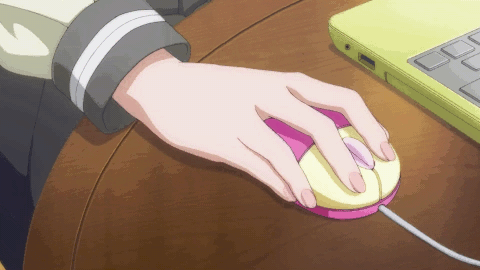

Exercez-vous avec la souris.
Cliquez sur le chiffre 2 à droite
(celui qui est écrit en bleu et en grand vers la droite).
Quelques conseils :
- Laisser le talon de votre main sur la table en face de la souris
- Tenir la souris entre le pouce, l'annulaire et l'auriculaire
- L'index posé sur le bouton de gauche
- Le majeur posé sur le bouton de droite
- Utiliser le pouce et les doigts pour bouger la pointe de la flèche vers le chiffre 2
- Ne pas déplacer la souris, la flèche doit bouger sans que votre main ne bouge
- Quand la flèche se transforme en main, ne plus bouger la souris
- Cliquer légèrement sur le bouton gauche de la souris avec votre index
Cliquer légèrement c'est le secret. Plus vous cliquez légèrement, mieux c'est. Essayez !
Pour les gauchers déplacer la souris à gauche de votre clavier.
